Nous sommes en fin d’après-midi le 2 mai, lorsque nous quittons le quai de remplissage eau/carburant de Marigot. Nous mettons alors le bateau en route au ralenti pour sortir de la baie le temps de finir les derniers rangements avant de mettre le cap vers le large. C’est à ce moment-là que nous croisons le minuscule bateau rouge « Baluchon ». Un bateau de 4m de long (presque 3 fois moins que le nôtre) qui a déjà effectué un tour du monde et qui est en route pour son deuxième, toujours mené par son concepteur et constructeur Yan Quenet. Finalement on a l’impression de vivre dans un palace en comparaison ! La petite victoire de ce dernier rangement c’est d’avoir réussi à faire rentrer l’annexe du bateau dans un des coffres arrière du bateau. Cela signifie que nous avons réussi à ranger absolument tout ce que nous avons à bord et que plus rien ne reste sur le pont. Il est alors 17h30 heure locale, nous sommes entre Saint Martin et Anguilla. Les voiles sont hissées et c’est le top départ de notre deuxième transat, la transat retour !
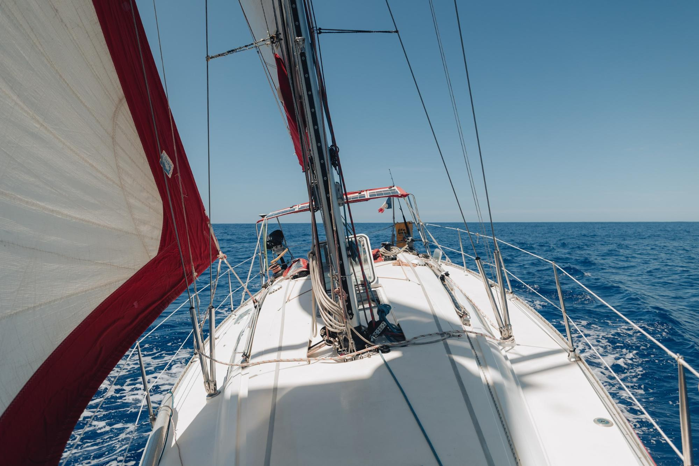
Le départ se fait au près serré en tirant des bords pour contourner la trèèèèès longue île d’Anguilla. Une fois cette île contournée, plus aucun obstacle sur notre route avant l’archipel des Açores. Il fait encore bien chaud et le bateau est gité et tape régulièrement dans les vagues. A chaque fois qu’il monte sur une vague, l’étrave sort de l’eau et retombe violemment en claquant la surface de l’eau. Le bateau perd alors sa vitesse et c’est souvent le moment que choisit une autre vague pour venir recouvrir le pont. C’est donc très humide dehors et pas facile de faire avancer le bateau à de bonnes vitesses moyennes. A l’intérieur, il faut se tenir en permanence au risque de se retrouver en bas du bateau à la prochaine vague. A l’avant, pour Clément, ce sont comme des montagnes russes, il a le droit à de nombreuses séquences d’apesanteur avant de reprendre contact avec son matelas.
Heureusement pour nous, la mer se range progressivement rendant les conditions un peu plus vivables dès le lever du soleil. Nous nous habituons progressivement et trouvons notre rythme à bord. Félicien souffre un peu plus mais il parvient assez vite à vaincre son mal de mer et à revenir en pleine forme !
Il fait toujours aussi chaud pour la seconde nuit. Si le coupe-vent est de sortie pour le quart de nuit, le short reste de mise !
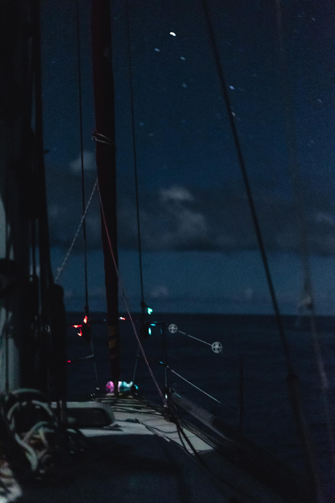
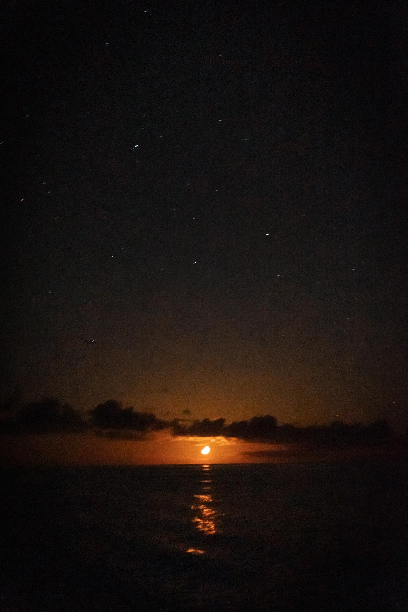
Notre troisième jour est plus tranquille, pas trop de vent, pas trop de mer. Le bateau glisse bien dans ces conditions, c’est très agréable. L’occasion de se rendre compte que depuis le départ, je ressens un sourire intérieur qui ne me quitte pas. J’avais oublié je crois, le plaisir de naviguer au large et de passer du temps en mer ! A part la gite et la vitesse du bateau qui font un peu regretter le portant, ce début de navigation est un pur régal !
Après des lumières incroyables au coucher de soleil, les conditions deviennent très douces. Lorsque Félicien me réveille pour le remplacer, j’ai pu ressentir avec plaisir un courant d’air frais traversant le bateau. Dans ces conditions tranquilles, il a pu ouvrir les hublots du bateau pour l’aérer et franchement, ce n’est pas du luxe ! Dehors, un beau ciel étoilé, accompagne une demi-lune qui se couche tranquillement en nous éclairant. Les conditions sont vraiment incroyables, je comprends pourquoi Félicien a fait un quart de près de 5h !
Le lever du jour est tout aussi magique, le bateau glisse tranquillement sur une mer miroir avec une légère houle. Les batteries sont faibles donc le pilote est éteint mais le bateau garde quand même sa route presque tout seul, en direction du soleil qui se lève. C’est à ce moment-là que j’entends un bruit derrière moi qui vient contraster avec la quiétude ambiante. En me retournant, j’observe dans le sillage ce que je pense d’abord être un dauphin… Mais en fait l’animal est énorme, c’est plutôt une baleine ! Je saisis alors la caméra pour essayer de filmer la scène et me dépêche en parallèle de déployer le Sound trap, notre hydrophone. Après quelques respirations, l’animal disparaît, encore un moment magique !
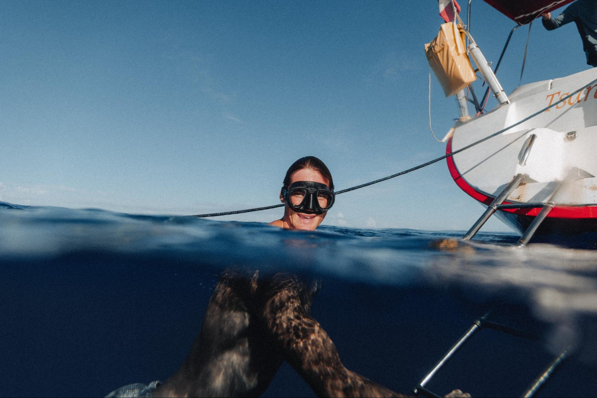
Dans l’après-midi, le vent est complètement tombé. Avec Clément, nous saisissons l’occasion pour nous baigner ! Un moment hors du temps dans une eau encore chaude et surtout d’une clarté exceptionnelle. Nous croisons même un petit baliste venu s’abriter sous la coque du bateau à l’arrêt.
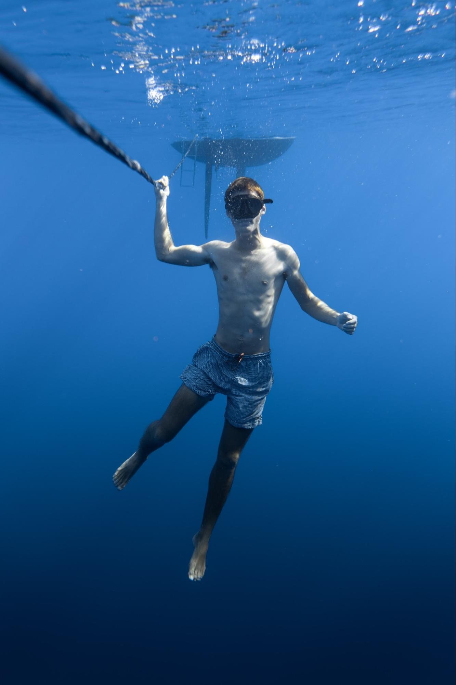
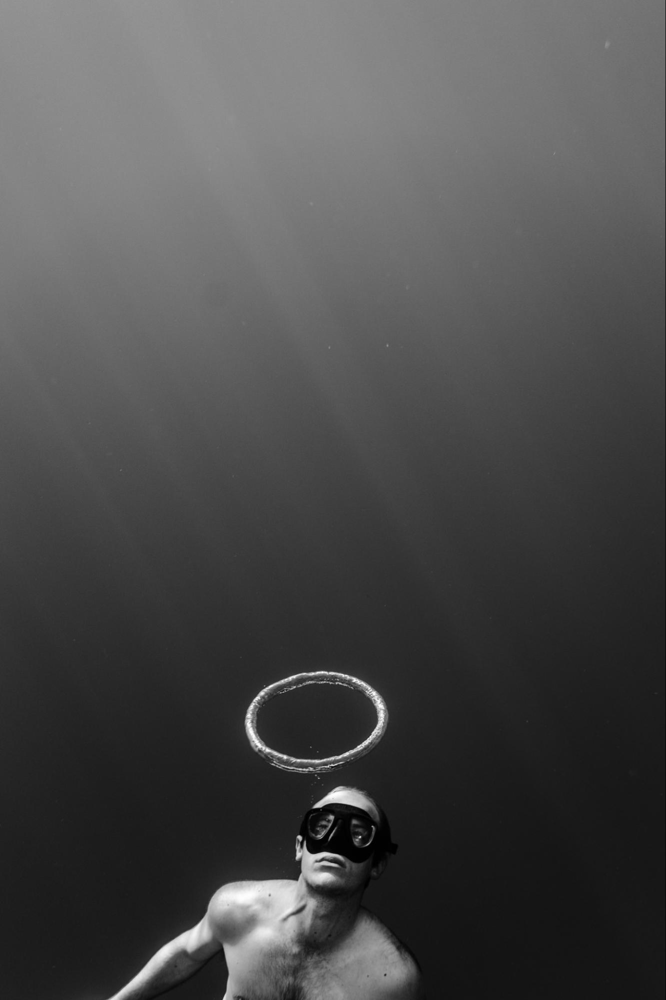
Après une nuit passée au moteur, nous avons pu renvoyer les voiles à la mi-journée pour essayer d’avancer tranquillement. En fin de journée, le vent fait son retour, il est accompagné d’impressionnants nuages et la mer commence à être bien formée. Le bateau est gité, le vent siffle dans le gréement et on sent que toute la structure du bateau est mise à contribution pour transformer la force du vent dans les voiles en vitesse pour le bateau. Le confort de vie à bord a bien changé en quelques heures, mais ça y est, on est enfin en route vers les Açores et en plus à bonne vitesse. On peut dire que ça y est, la transat retour commence vraiment !
Après un record de lenteur dans la pétole, nous ne sommes pas loin d’un record de vitesse sur 24h ! Dès que l’on met le nez dehors, on se fait rincer. Le vent est assez soutenu entre 20 et 24 nœuds et ce matin, dans un énorme grain, on a même eu jusqu’à 37 nœuds. Toute la journée s’est déroulée sous les nuages entre pluie et embruns. Ce soir, dans la nuit, le ciel semble se dégager, j’espère qu’on va vers du mieux… Normalement encore 48h difficiles avant de retrouver des conditions plus confortables. C’est bête à dire, mais depuis le début de cette traversée, je me régale. Pourtant, les conditions sont loin d’être idylliques, tout est trempé dans le bateau, ça bouge dans tous les sens, dormir est très difficile, … Et malgré tout, je suis heureux d’être là et de faire cette navigation. Je ne vais pas me plaindre de ça, et puis j’ai encore bien le temps de changer d’avis !
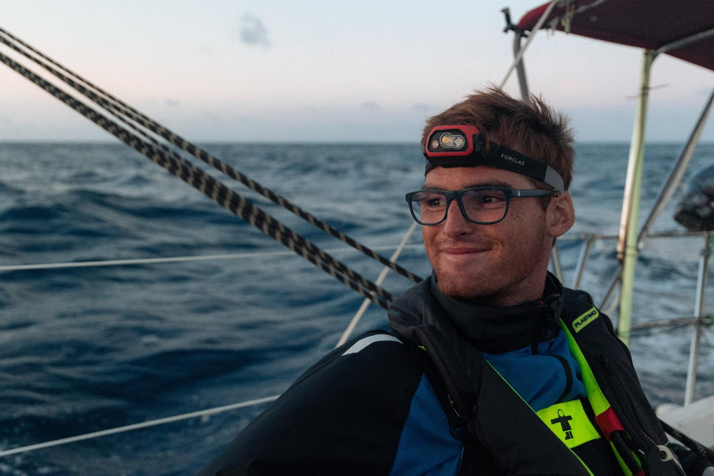
Les conditions s’améliorent tranquillement. Le soleil a fait son retour dans l’après-midi, aidant à sécher le bateau ainsi que nos vêtements. Plutôt agréable quand on sait qu’on a dû écoper plusieurs litres d’eau rentrés dans le bateau avec les vagues… Sur les dernières 24h, j’ai été trempé 4 fois jusqu’au caleçon, à ce rythme-là, je n’aurai plus de caleçon sec dans très peu de temps ! La nuit, la lune commence à bien nous éclairer et le ciel est complètement dégagé. La mer s’est rangée et le vent moins fort et plus régulier nous permet de renvoyer un peu de toile.
Première assiette renversée de la transat ! Une petite erreur de communication au moment du service entre Clément et moi a conduit au drame… Heureusement, tout le monde a quand même pu manger à sa faim. Au menu, un super plat de pâtes, aubergines, crème, féta accompagné de basilic frais. Le tout préparé par le chef Quibel en personne. Un régal !
Depuis le début de cette transat retour, nous croisons beaucoup d’objets sur l’eau. Souvent des bouteilles en plastique comme des bouteilles de lessive ou des gros bidons flottant entre deux eaux. C’est étonnant puisque depuis le début de notre voyage, on n’a quasiment jamais rien vu sur l’eau (à part des sargasses bien sûr…).
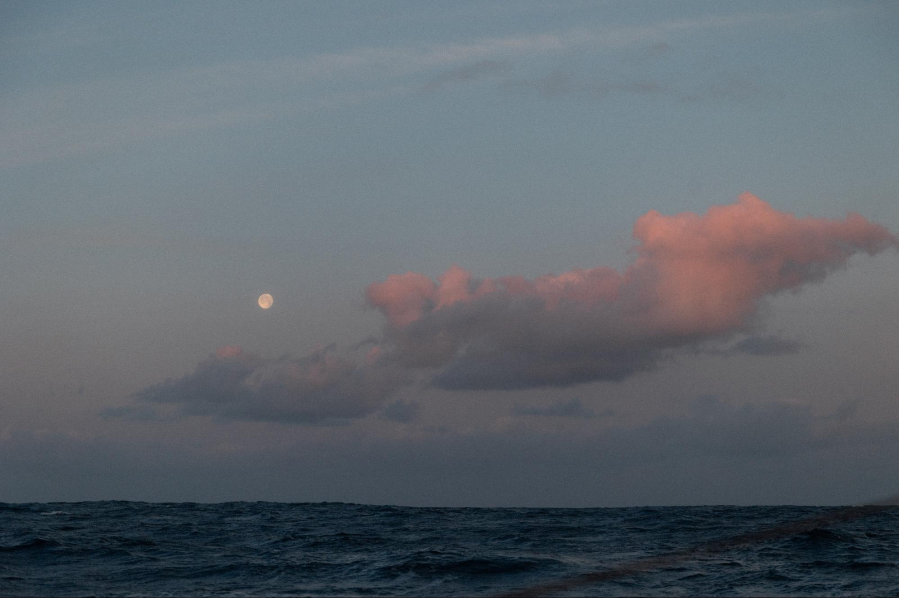
De retour toutes voiles dehors, les conditions sont incroyables. Sans doute un de mes meilleurs levers de soleil depuis le départ, avec le bateau qui glisse dans une douzaine de nœuds de vent. Un pur moment de bonheur. Très rapidement, ça fait oublier l’inconfort des jours précédents !
Avec le retour au calme sur le bateau, nous avons pu faire notre premier apéro de la transat, c’est chouette de revenir un peu plus à plat !
La nuit, la lune est presque pleine et nous permet de voir presque comme en plein jour ! Par contre, progressivement, on rajoute des couches de vêtements pour les quarts de nuit. Je pense que la nuit prochaine, je vais devoir ressortir la salopette de quart.
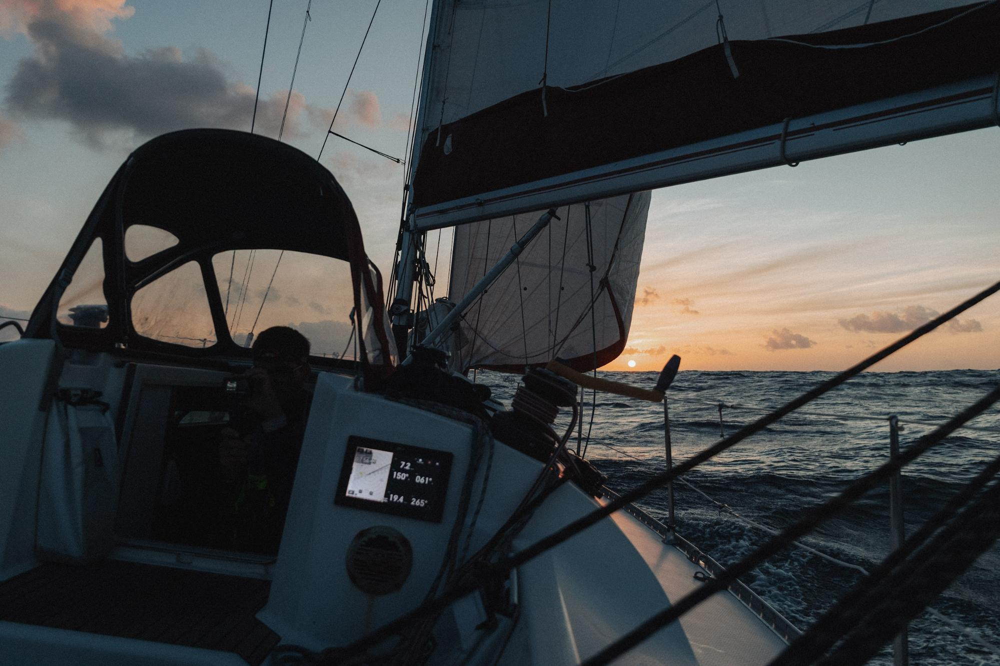
Moins de 1000 milles à parcourir jusqu’à l’arrivée. La route est encore longue, mais l’air et surtout la mer commencent à fraîchir sérieusement ! J’ai effectivement enfilé ma salopette pour le quart de nuit, et même des chaussettes étanches dans les crocs, finit les quarts pieds nus, à mon grand désarroi. Le bateau navigue maintenant à plat et on se remet à faire des bonnes de séquences de sommeil !
Nouveau record de vitesse à bord de Tsanteleina, 187 milles nautiques parcourus dans la journée soit plus de 8 nœuds de moyenne. Jusqu’à présent, on n’avait jamais fait plus de 2h à 8 nœuds de moyenne ! Et étonnamment, les conditions sont très confortables à bord. Entre 17 et 20 nœuds de vent, au largue (120°/130° du vent) avec un peu de courant portant font un super cocktail. Le bateau file à toute allure en restant super confortable ! Après un nouveau super lever de soleil ce matin, on profite d’avoir une journée ensoleillée, peut-être la dernière avant d’arriver aux Açores.
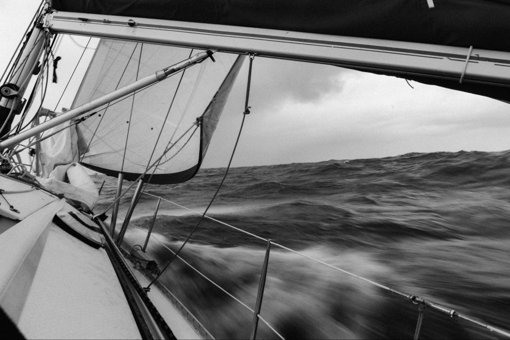
Les résultats de la journée folle sont maintenant connus ! La plus grande distance parcourue en 24h est maintenant de 194,7 nm, soit 8,1 nœuds de moyenne sur 24h. C’est juste énorme pour un bateau comme le nôtre ! Sur 1h, on a même réussi à tenir une moyenne de 9 nœuds !
Le vent est maintenant tombé et on glisse tranquillement en route directe vers les Açores. Une grosse dépression doit passer au-dessus de nous et dans les prochaines heures, le vent et surtout, la mer devraient être costauds.
Aujourd’hui, c’est un jour très spécial, c’est l’anniversaire de Clément ! 23ans pour le petit dernier de l’équipage. Pour fêter ça, j’ai préparé un gâteau au chocolat pendant mon quart de nuit pour qu’il ait la surprise au réveil. C’était très sportif avec les mouvements du bateau dans la mer qui commence à être bien formée ! Je ne suis pas totalement sûr qu’il soit assez cuit… On aura la réponse dans la journée !
Aujourd’hui, on a aussi mangé notre première boîte de conserve depuis le départ, des raviolis. Il a fallu attendre le 10e jour de navigation (lorsque Félicien a cuisiné un dahl de lentilles) pour qu’on ouvre le « placard transat ». C’est un placard dans lequel on stocke les réserves en prévision de cette grande navigation depuis notre passage en Martinique. Visiblement, on va encore avoir beaucoup de marge dans notre avitaillement…
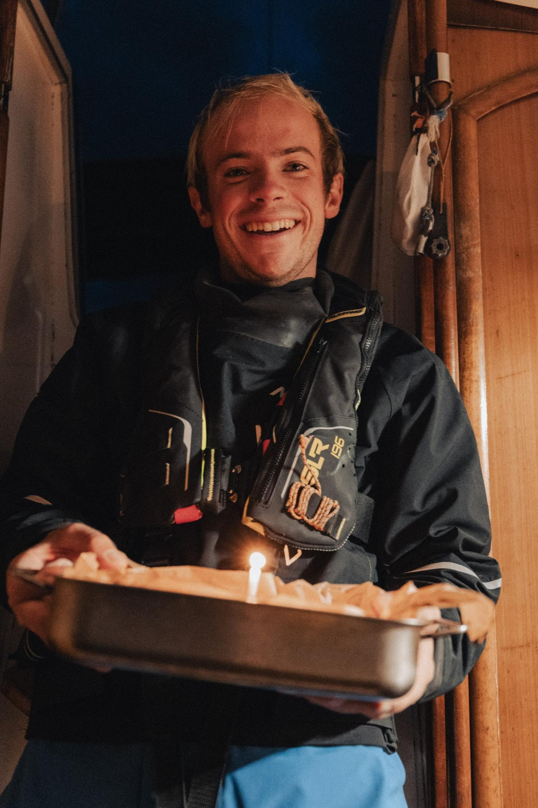
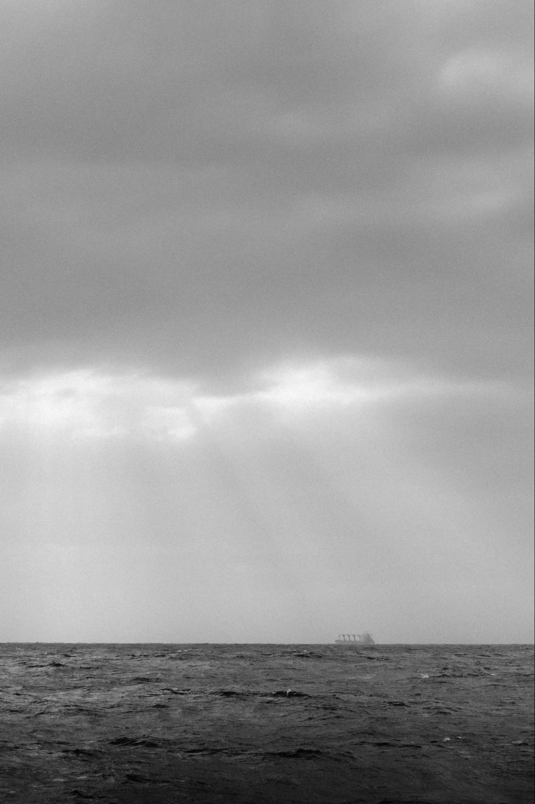
Journée mouvementée aujourd’hui. Les conditions sont bien musclées avec régulièrement du vent au-delà de 30 nœuds. On continue d’explorer les conserves achetées en Martinique… C’est vraiment pas dingue... Vivement qu’on se débarrasse de ces quelques repas pour se remettre à cuisiner par nous-même ! Je pense que l’équipage ne tiendra pas très longtemps si on continue avec ce régime alimentaire. La fraîcheur commence à bien se faire sentir sur le pont et dans les cabines la nuit. J’ai même sorti mon bonnet !
Petite frayeur pendant la nuit. La consommation électrique du bateau était anormalement haute… Après une longue investigation dans les moindres recoins des coffres les plus inaccessibles du bateau au milieu de la nuit nous avons trouvé l’origine du problème. Heureusement rien de grave ! Pendant ce temps-là Félicien a dû barrer le bateau dans une nuit absolument noire sans aucun repère et avec une houle joueuse. Une sacrée épreuve de concentration et de feeling avec le bateau !
Décidément, les dernières journées de grandes traversées nous réservent toujours de bonnes surprises. Aujourd’hui, nous nous sommes battus avec notre spi. Pourtant c’est un fidèle ami qui ne nous a pas fait défaut malgré les heures et, mêmes jours d’utilisation de la transat aller, il nous en a fait voir de toutes les couleurs aujourd’hui. Il a commencé par s’enrouler bien serré autour de l‘étai au moment de l’envoi. Quelques acrobaties aériennes plus tard, il a retrouvé sa position naturelle. Les conditions forcissent tranquillement au cours de la journée, jusqu’à ce que le bras (un des bouts qui tiennent le spi) ne casse en début de nuit. Petit moment intense pour l’affaler correctement, réparer provisoirement et le renvoyer. Le vent continue de monter et le bateau sort de sa route à plusieurs reprises. Nous décidons finalement de l’affaler pour la suite de la nuit. Une nuit terriblement inconfortable avec un bateau qui roule énormément… Heureusement la dernière !
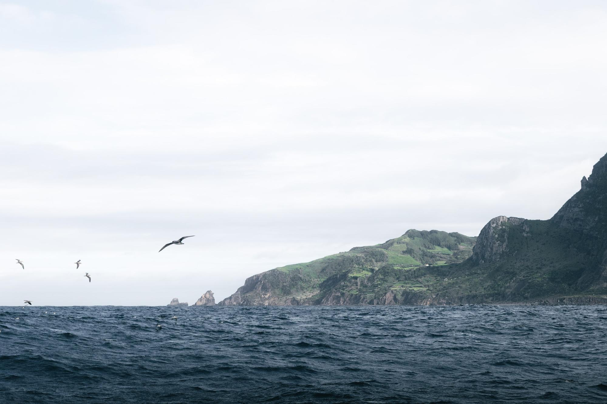
Le soleil se lève dans la grisaille et je finis par distinguer entre deux nuages une masse sombre… L’île de Flores, notre destination se montre enfin. La première impression est assez terrifiante. De hautes falaises noires terriblement acérées et hautes découpent les nuages sur l’horizon. Une ambiance tout à fait lugubre qui me fait me demander si cette terre est vraiment la raison pour laquelle nous sommes sur le bateau depuis plus de deux semaines maintenant. Après ces quelques minutes de doute, le soleil finit par percer, les nuages se dissipent et nous approchons de l’île. La vision est alors toute autre, Clément se réveille et me rejoint pour admirer ces prairies verdoyantes entourant de petits villages qui surplombent des falaises sur lesquelles de magnifiques cascades jaillissent. La nature est luxuriante et pour une fois, nous semble familière. Des centaines d’oiseaux nous accompagnent autour de l’île jusqu’à atteindre le petit port de Lajes das Flores.
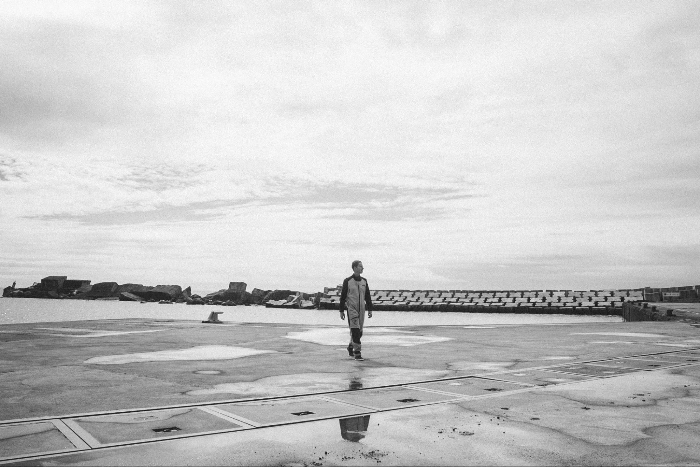
15j 12h après avoir quitté les Antilles, nous voilà de l’autre côté de l’Atlantique, dans un petit coin de paradis tout à fait paisible qu’il nous tarde de découvrir.